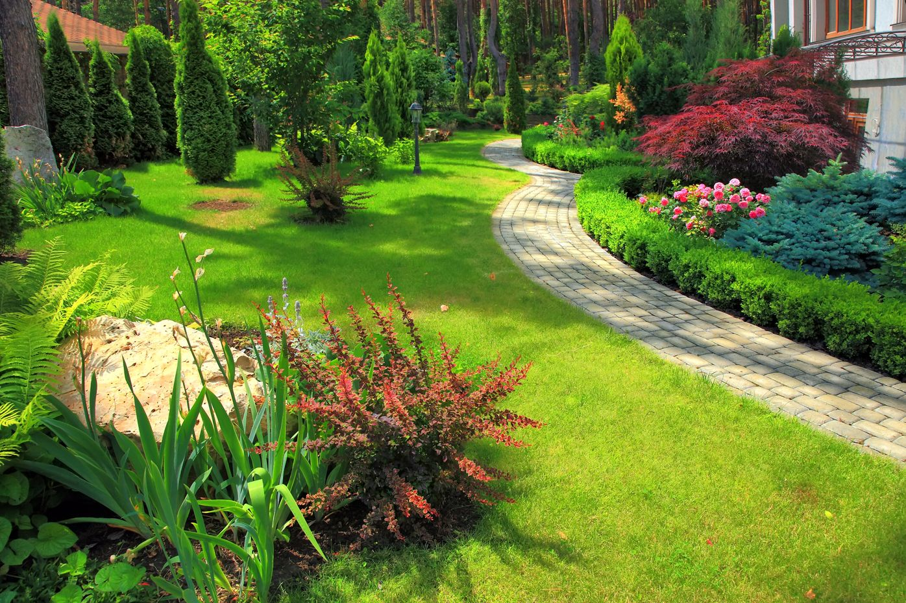
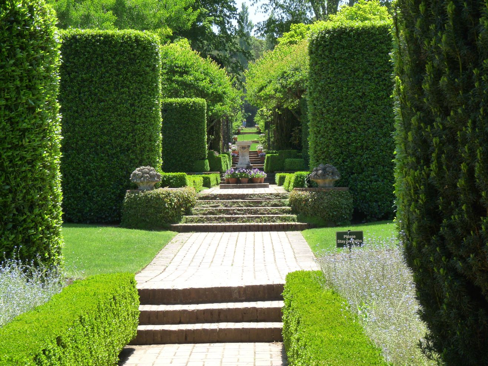
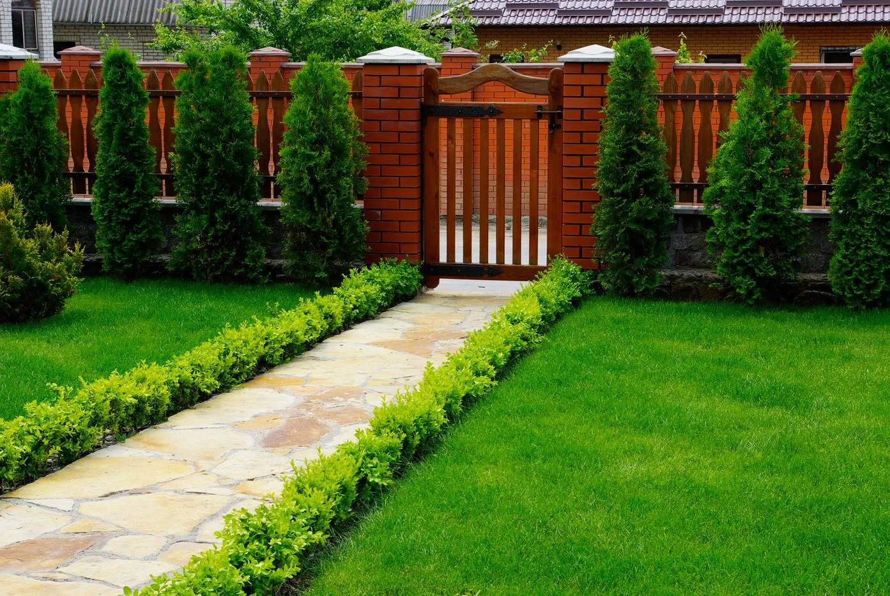

<section class="gallery container">
    <div class="gallery__title-box">
  <h2 class="gallery__title">Gallery</h2>
  <svg xmlns="http://www.w3.org/2000/svg" viewBox="0 0 200 10" width="200" height="10">
            <path d="M0,5 Q50,0 100,5 Q150,10 200,5" fill="transparent" stroke="#4CAF50" stroke-width="2" />
            <path d="M200,5 Q150,0 100,5 Q50,10 0,5" fill="transparent" stroke="#4CAF50" stroke-width="2" />
        </svg>  </div>

<div id="gallery__carousel" class="carousel slide">
  <div class="carousel-indicators">
    <button type="button" data-bs-target="#gallery__carousel" data-bs-slide-to="0" class="active" aria-current="true" aria-label="Slide 1"></button>
    <button type="button" data-bs-target="#gallery__carousel" data-bs-slide-to="1" aria-label="Slide 2"></button>
    <button type="button" data-bs-target="#gallery__carousel" data-bs-slide-to="2" aria-label="Slide 3"></button>
    <button type="button" data-bs-target="#gallery__carousel" data-bs-slide-to="3" aria-label="Slide 4"></button>
    <button type="button" data-bs-target="#gallery__carousel" data-bs-slide-to="4" aria-label="Slide 5"></button>
  </div>
  <div class="carousel-inner">
    <div class="carousel-item active">
          <div class="ratio ratio-16x9">
      
    </div></div>
    <div class="carousel-item">
                  <div class="ratio ratio-16x9">
      
    </div></div>
    <div class="carousel-item">
                  <div class="ratio ratio-16x9">
      
    </div></div>
     <div class="carousel-item">
                  <div class="ratio ratio-16x9">
      
    </div></div>
     <div class="carousel-item">
                  <div class="ratio ratio-16x9">
      
    </div></div>
  </div>
  <button class="carousel-control-prev" type="button" data-bs-target="#gallery__carousel" data-bs-slide="prev">
  <span class="carousel-control-prev-icon d-none" aria-hidden="true"></span>
  <span class="custom-prev-icon">❮</span>
  <span class="visually-hidden">Previous</span>
</button>
<button class="carousel-control-next" type="button" data-bs-target="#gallery__carousel" data-bs-slide="next">
  <span class="carousel-control-next-icon d-none" aria-hidden="true"></span>
  <span class="custom-next-icon">❯</span>
  <span class="visually-hidden">Next</span>
</button>
</div>
</section> 

